import numpy as np
import matplotlib.pyplot as plt[PINKOCTO] 퓨리에변환(detailed)
예비학습
- Notations: 일반적으로 신호처리에서 사용하는 notation은 통계학에서 사용하는 notation과 다른데 대충 정리하면 아래와 같다.
- 자료의수: \(N\) // 통계에서는 보통 \(n\)으로 씀.
- 시간을 나타내는 인덱스: \(n\), \(n\)은 0부터 시작 // 통계에서는 \(t\)라고 쓰며 \(t=1\) 부터 시작함.
- 주파수영역의의 인덱스: \(k\), \(k\)는 0부터 시작
- 이산신호: \({\bf x}:=[x[0],x[1],\dots,x[n],\dots,x[N-1]]^\top\) // 통계에서는 \({\bf x}:=[x_1,x_2,\dots,x_n]\) 으로 사용
- 퓨리에변환된 이산신호: \({\bf X}:=[X[0],X[1],\dots,X[k],\dots,X[N-1]]^\top\)
- 공식: 이 버전만 기억해도 무방함.
- https://en.wikipedia.org/wiki/Discrete_Fourier_transform
\[X[k] = \sum_{n=0}^{N-1}x[n]e^{-\frac{j2\pi kn}{N}}, k=0,1,2\dots,N-1\]
Parseval thm
- https://en.wikipedia.org/wiki/Parseval%27s_theorem
- 이론: 신호 \({\bf y}\)가 주어졌다고 할때 아래의 식이 성립함.
\[\sum_{n=0}^{N-1}|x[n]|^2= \frac{1}{N}\sum_{k=0}^{N-1}|X[k]|^2\]
이 이론에 해당하는 state는 아래에 서술되어 있음
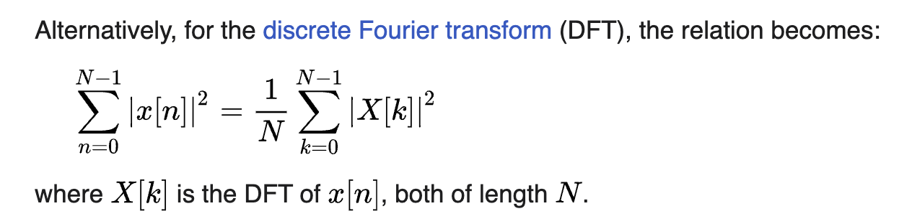
- 예제1
x = np.array([1,2,3,4,5])
X = np.fft.fft(x) sum(abs(x)**2)55sum(abs(X)**2)/len(x)55.0- 예제2
t = np.linspace(0,1,100)
x = np.cos(2*t)
X = np.fft.fft(x) sum(abs(x)**2)40.722432328290004sum(abs(X)**2)/len(x)40.72243232829- 예제3
x = np.random.randn(100)
X = np.fft.fft(x) sum(abs(x)**2)122.4501425713306sum(abs(X)**2)/len(x)122.45014257133073- 결론: 무슨 신호를 가져와도 파르스발 정리는 성립함.
\(X[0]\)의 해석
- 이론: \(\frac{1}{N}X[0]\)의 값은 \(\frac{1}{N}\sum_{n=0}^{N-1}x[n]\)을 의미함.
- 이유: \(X[k] = \sum_{n=0}^{N-1}x[n]e^{-\frac{j2\pi kn}{N}}\)에서 \(k=0\)을 대입하면 바로 나옴
- 예제1
x = np.array([1,2,3,4,5])
X = np.fft.fft(x) np.mean(x)3.0X[0]/5(3+0j)- 예제2
t = np.linspace(0,1,100)
x = np.cos(2*t)
X = np.fft.fft(x) np.mean(x)0.45300618395436126X[0]/100(0.4530061839543613+0j)- 예제3
x = np.random.randn(100)
X = np.fft.fft(x) np.mean(x)0.01977183159579816X[0]/100(0.01977183159579816+0j)대칭과 관련한 이론
이론 및 예시
- 이론: real-valued signal은 무조건 \(|X[k]|^2\)의 그래프가 대칭으로 나옴 (단, \(X[0]\)은 제외)
- 예시1:
x = np.array([1,2,3,4,5])
X = np.fft.fft(x) plt.plot(abs(X)**2,'o')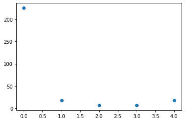
- 첫항을 제외하고 대칭임
- 예시2:
x = np.array([1,2,3,-3,-2,-1])
X = np.fft.fft(x) plt.plot(abs(X)**2,'o')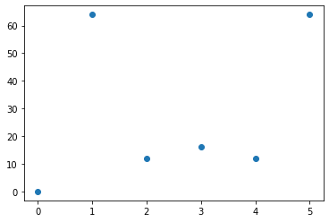
- 첫항을 제외하고 대칭임
- 예시3: \({\bf x}\)가 복소수일 경우는 첫항을 제외하고 대칭이 되지 않음
x = np.array([1+1j,2+2j,3+3j,-3-3j,-2-2j,1-1j])
X = np.fft.fft(x) plt.plot(abs(X)**2,'o')_files/figure-html/cell-26-output-1.png)
왜 \(x[n]\)이 실수일 경우만 \(|X[k]|^2\)이 대칭으로 나올까?
- 예비학습1
임의의 \(0 \leq \alpha \leq 1\)에 대하여 \(\cos(2\pi \alpha) =\cos(2\pi (1-\alpha))\) 가 성립함
alpha = 0.2
np.cos(2*np.pi*alpha),np.cos(2*np.pi*(1-alpha))(0.30901699437494745, 0.30901699437494723)- 그래프를 잘 그려보세여
- 예비학습2
임의의 \(0 \leq \alpha \leq 1\)에 대하여 \(\sin(2\pi \alpha) = -\sin(2\pi (1-\alpha))\) 가 성립함
alpha = 0.2
np.sin(2*np.pi*alpha),np.sin(2*np.pi*(1-alpha))(0.9510565162951535, -0.9510565162951536)- 그래프를 잘 그려보세여
- 왜 실수일경우만 대칭인지? (어디 정리된걸 아무리 찾아도 못찾겠어서 그냥 직접 수식을 썼는데요, 이걸 기억할 필요는 없어요.. 아마 제가 쓴것보다 쉽게 설명하는 방법이 있을겁니다)
(해설) \(k=0,1,2,\dots,N-1\)에 대하여 \(X[k]\)는 아래와 같이 표현가능하다.
\[X[k] = \sum_{n=0}^{N-1}x[n]e^{-\frac{j2\pi kn}{N}}\]
오일러공식을 사용하면 아래와 같이 정리할 수 있다.
\[X[k] = \sum_{n=0}^{N-1}x[n]\cos\left(-\frac{2\pi kn}{N}\right) + i \sum_{n=0}^{N-1}x[n]\sin\left(-\frac{2\pi kn}{N}\right)\]
cos은 짝함수, sin은 홀함수임을 이용하여 다시정리하면
\[X[k] = \sum_{n=0}^{N-1}x[n]\cos\left(\frac{2\pi kn}{N}\right) - i \sum_{n=0}^{N-1}x[n]\sin\left(\frac{2\pi kn}{N}\right)\]
case1 \(k=1\) 인 경우와 \(k=N-1\)인 경우는 서로 \(|X[k]|^2\)이 같음을 보이자.
\[X[1] = \sum_{n=0}^{N-1}x[n]\cos\left(\frac{2\pi n}{N}\right) - i \sum_{n=0}^{N-1}x[n]\sin\left(\frac{2\pi n}{N}\right)\]
\[X[N-1] = \sum_{n=0}^{N-1}x[n]\cos\left(\frac{2\pi (N-1)n}{N}\right) - i \sum_{n=0}^{N-1}x[n]\sin\left(\frac{2\pi(N-1) n}{N}\right)\]
여기에서 예비학습1,2를 떠올리면 \(\cos\left(\frac{2\pi n}{N}\right)=\cos\left(\frac{2\pi (N-1)n}{N}\right)\) 이고 \(\sin\left(\frac{2\pi n}{N}\right)=-\sin\left(\frac{2\pi(N-1) n}{N}\right)\) 임을 알 수 있다. 따라서 \(X[1]\)와 \(X[N-1]\)은 켤레복소수이다. 즉
\[X[1] = X[N-1]^\ast, \quad X[1]^\ast = X[N-1]\]
이다. 그런데 임의의 복소수 \(x=a+bi\)에 대하여 \(|x|^2 = a^2+b^2 = (a+bi)(a-bi)= x x^\ast\) 가 성립하므로
\[|X[1]|^2 = |X[N-1]|^2\]
이 성립한다.
만약에 \(x[n]\)이 실수가 아닌경우는 \(\cos\left(\frac{2\pi n}{N}\right)=\cos\left(\frac{2\pi (N-1)n}{N}\right)\) 이고 \(\sin\left(\frac{2\pi n}{N}\right)=-\sin\left(\frac{2\pi(N-1) n}{N}\right)\) 이라고 하여도 \(X[1]\)와 \(X[N-1]\)은 켤레복소수라고 주장할수 없다.
case2 \(k=2\) 인 경우와 \(k=N-2\)인 경우는 서로 \(|X[k]|^2\)이 같음도 비슷한 논리로 보일 수 있다.
하나의 주파수를 가진 cos
아래와 같이 하나의 주파수만 있는 \(\cos\)을 가정하자.
\[x[n] = \cos\left(\frac{2\pi n}{N} \right)\]
N = 15
x = np.array([np.cos(2*np.pi*n/N) for n in range(N)]) 퓨리에변환은 아래와 같다.
\[X[k] = \sum_{n=0}^{N-1}x[n]\cos\left(\frac{2\pi kn}{N}\right) - i \sum_{n=0}^{N-1}x[n]\sin\left(\frac{2\pi kn}{N}\right)\]
위의 식에서 \(x[n]=\cos\left(\frac{2\pi n}{N} \right)\)을 대입하면
\[X[k] = \sum_{n=0}^{N-1}\cos\left(\frac{2\pi n}{N} \right)\cos\left(\frac{2\pi kn}{N}\right) - i \sum_{n=0}^{N-1}\cos\left(\frac{2\pi n}{N} \right)\sin\left(\frac{2\pi kn}{N}\right)\]
와 같이 된다. 위의 식은 아래와 같은 특징들이 있다.
허수파트 해석
관찰1: 모든 \(k\)에 대하여 \(X[k]\)의 허수파트는 항상 0이다.
k=0
k=0
sin_part_0 = np.array([np.sin(2*np.pi*k*n/N) for n in range(N)])x*sin_part_0array([ 0., 0., 0., 0., -0., -0., -0., -0., -0., -0., -0., -0., 0.,
0., 0.])sum(x*sin_part_0)0.0k=1
k=1
sin_part_1 = np.array([np.sin(2*np.pi*k*n/N) for n in range(N)])x*sin_part_1array([ 0. , 0.37157241, 0.49726095, 0.29389263, -0.10395585,
-0.4330127 , -0.47552826, -0.20336832, 0.20336832, 0.47552826,
0.4330127 , 0.10395585, -0.29389263, -0.49726095, -0.37157241])sum(x*sin_part_1)1.0547118733938987e-15약간을 직관을 위해서 그림을 그려보자.
plt.plot(x,'--o')
plt.plot(sin_part_1,'--o')_files/figure-html/cell-36-output-1.png)
\(x\)가 \(\mathbb{R}\)에서 정의된 연속함수라고 상상하면 \(\sum_{n=0}^{N-1}\cos\left(\frac{2\pi n}{N} \right)\sin\left(\frac{2\pi kn}{N}\right)\)에 대응하는 식은 \(\int_0^{2\pi}\cos(t)\sin(t)dt\)라고 볼 수 있어서 sum(x*sin_part_1)=0임을 더 쉽게 이해할 수 있다.
k=2
k=2
sin_part_2 = np.array([np.sin(2*np.pi*k*n/N) for n in range(N)])plt.plot(x,'--o')
plt.plot(sin_part_2,'--o')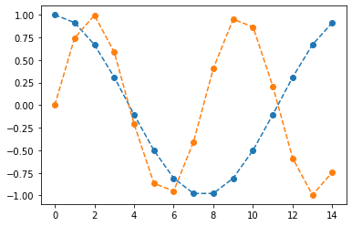
\(x\)가 \(\mathbb{R}\)에서 정의된 연속함수라고 상상하면 파란선에 대응하는것은 \(\cos(t)\) 주황선에 대응하는 것은 \(\sin(2t)\)로 볼 수 있는데 둘은 직교하므로 둘을 곱한뒤 적분하면 (더하면) 0이 된다.
sum(x*sin_part_2)-1.2212453270876722e-15\(\cos(t)\)는 임의의 \(\sin(kt)\)와 항상 직교하므로, 임의의 \(k\)에 대하여 허수파트는 항상 0이다.
따라서 이 경우 \(X[k]\)는 아래와 같이 써도 무방하다.
\[X[k] = \sum_{n=0}^{N-1}x[n]\cos\left(\frac{2\pi kn}{N}\right)\]
실수파트 해석
관찰2: \(X[k]\)의 실수파트는 \(k=1\)혹은 \(k=N-1\)일때 아래와 같이 정리된다.
\[\sum_{n=0}^{N-1}\cos\left(\frac{2\pi n}{N} \right)^2\]
그외의 경우에는 아래와 같이 된다.
k=0
k=0
cos_part_0 = np.array([np.cos(2*np.pi*k*n/N) for n in range(N)])plt.plot(x,'--o')
plt.plot(cos_part_0,'--o')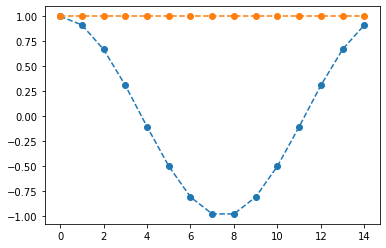
- 파란선에 대응하는것은 \(\cos(t)\) 주황선에 대응하는 것은 \(1\)로 볼 수 있는데 둘은 직교하므로 둘을 곱한뒤 적분하면 (더하면) 0이 된다.
k=2
k=2
cos_part_2 = np.array([np.cos(2*np.pi*k*n/N) for n in range(N)])plt.plot(x,'--o')
plt.plot(cos_part_2,'--o')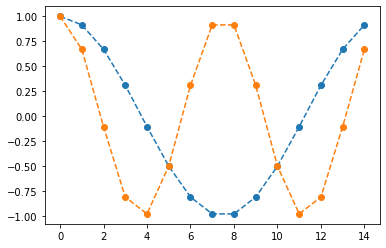
- 파란선에 대응하는것은 \(\cos(t)\) 주황선에 대응하는 것은 \(\cos(2t)\)로 볼 수 있는데 둘은 직교하므로 둘을 곱한뒤 적분하면 (더하면) 0이 된다.
임의의 \(k\)에 대하여 \(\cos(t)\)와 \(\cos(kt)\)는 항상 직교하므로 둘을 곱한뒤 적분하면 (더하면) 0이 된다.
- 요약: 만약에 \(x[n]\)이 아래와 같은 꼴이라고 하자.
\[x[n] = \cos\left(\frac{2\pi n}{N} \right)\]
이때 퓨리에변환 \(X[k]\)는 아래와 같이 정리된다.
\[X[k] = \sum_{n=0}^{N-1}x[n]\cos\left(\frac{2\pi kn}{N}\right) - i \sum_{n=0}^{N-1}x[n]\sin\left(\frac{2\pi kn}{N}\right)\]
\(X[k]\)의 허수파트는 항상 0이 되고, 실수 파트는 \(k=1,N-1\)일 경우에만 값을 가지고 나머지는 0의 값을 가진다.
X = np.fft.fft(x)
fig, ax = plt.subplots(1,3)
ax[0].plot(x,'o--'); ax[0].set_title('x[n]')
ax[1].plot(np.real(X),'x'); ax[1].set_title('real(X[k])')
ax[2].plot(np.imag(X),'x'); ax[2].set_title('imag(X[k])')
fig.set_figwidth(15)_files/figure-html/cell-44-output-1.png)
- 응용: \(x[n]\)이 아래와 같은 꼴이라고 하자.
\[x[n] = \cos\left(\frac{6\pi n}{N} \right)\]
퓨리에변환 \(X[k]\)는 아래와 같이 정리된다.
\[X[k] = \sum_{n=0}^{N-1}x[n]\cos\left(\frac{2\pi kn}{N}\right) - i \sum_{n=0}^{N-1}x[n]\sin\left(\frac{2\pi kn}{N}\right)\]
\(X[k]\)의 허수파트는 항상 0이 되고, 실수 파트는 \(k=3,N-3\)일 경우에만 값을 가지고 나머지는 0의 값을 가진다.
N = 15
x = np.array([np.cos(6*np.pi*n/N) for n in range(N)])
X = np.fft.fft(x)
fig, ax = plt.subplots(1,3)
ax[0].plot(x,'o--'); ax[0].set_title('x[n]')
ax[1].plot(np.real(X),'x'); ax[1].set_title('real(X[k])')
ax[2].plot(np.imag(X),'x'); ax[2].set_title('imag(X[k])')
fig.set_figwidth(15)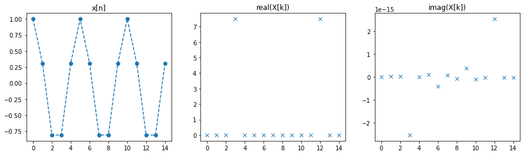
여러 주파수를 가진 cos
- 예시: \(x[n]\)이 아래와 같은 꼴이라고 하자.
\[x[n] = \cos\left(\frac{2\pi n}{N} \right)+2\times\cos\left(\frac{6\pi n}{N} \right)\]
퓨리에변환 \(X[k]\)는 아래와 같이 정리된다.
\[X[k] = \sum_{n=0}^{N-1}x[n]\cos\left(\frac{2\pi kn}{N}\right) - i \sum_{n=0}^{N-1}x[n]\sin\left(\frac{2\pi kn}{N}\right)\]
\(X[k]\)의 허수파트는 항상 0이 되고, 실수 파트는 \(k=1,3,N-3,N-1\)일 경우에만 값을 가지고 나머지는 0의 값을 가진다.
N = 15
x = np.array([np.cos(2*np.pi*n/N)+2*np.cos(6*np.pi*n/N) for n in range(N)])
X = np.fft.fft(x)
fig, ax = plt.subplots(1,3)
ax[0].plot(x,'o--'); ax[0].set_title('x[n]')
ax[1].plot(np.real(X),'x'); ax[1].set_title('real(X[k])')
ax[2].plot(np.imag(X),'x'); ax[2].set_title('imag(X[k])')
fig.set_figwidth(15)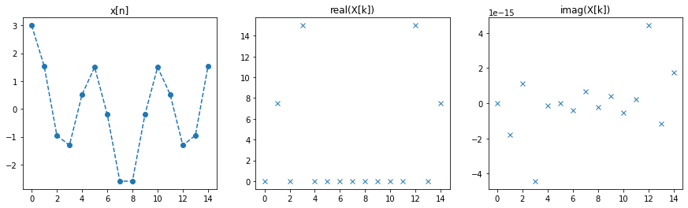
이것은 \(x[n]\)을 아래와 같이 나눈뒤
- \(x_1[n] = \cos\left(\frac{2\pi n}{N} \right)\)
- \(x_2[n] = 2\times\cos\left(\frac{6\pi n}{N} \right)\)
각각 퓨리에변환한 결과를 합친것과 같다.
N = 15
x1 = np.array([np.cos(2*np.pi*n/N) for n in range(N)])
x2 = np.array([2*np.cos(6*np.pi*n/N) for n in range(N)])
X1 = np.fft.fft(x1)
X2 = np.fft.fft(x2)
fig, ax = plt.subplots(2,3)
ax[0][0].plot(x1,'o--'); ax[0][0].set_title('x1[n]')
ax[0][1].plot(np.real(X1),'x'); ax[0][1].set_title('real(X1[k])')
ax[0][2].plot(np.imag(X1),'x'); ax[0][2].set_title('imag(X1[k])')
ax[1][0].plot(x2,'o--'); ax[1][0].set_title('x2[n]')
ax[1][1].plot(np.real(X2),'x'); ax[1][1].set_title('real(X2[k])')
ax[1][2].plot(np.imag(X2),'x'); ax[1][2].set_title('imag(X2[k])')
fig.set_figwidth(15)
fig.set_figheight(8)_files/figure-html/cell-47-output-1.png)
여러 주파수를 가진 sin
- 예시: \(x[n]\)이 아래와 같은 꼴이라고 하자.
\[x[n] = \sin\left(\frac{2\pi n}{N} \right)+2\times\sin\left(\frac{6\pi n}{N} \right)\]
퓨리에변환 \(X[k]\)는 아래와 같이 정리된다.
\[X[k] = \sum_{n=0}^{N-1}x[n]\cos\left(\frac{2\pi kn}{N}\right) - i \sum_{n=0}^{N-1}x[n]\sin\left(\frac{2\pi kn}{N}\right)\]
앞의 논의와 유사하게 전개하면 \(X[k]\)의 실수파트는 항상 0이 되고, 허수파트는 \(k=1,3,N-3,N-1\)일 경우에만 값을 가지고 나머지는 0의 값을 가진다.
N = 15
x = np.array([np.sin(2*np.pi*n/N)+2*np.sin(6*np.pi*n/N) for n in range(N)])
X = np.fft.fft(x)
fig, ax = plt.subplots(1,3)
ax[0].plot(x,'o--'); ax[0].set_title('x[n]')
ax[1].plot(np.real(X),'x'); ax[1].set_title('real(X[k])')
ax[2].plot(np.imag(X),'x'); ax[2].set_title('imag(X[k])')
fig.set_figwidth(15)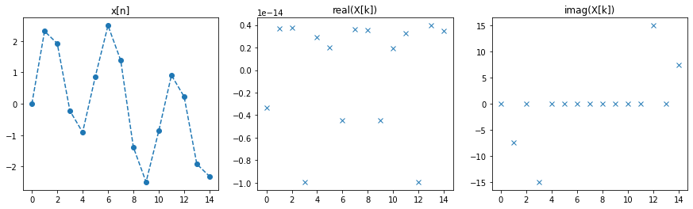
요약
- \(x[n]\)이 여러주파수를 가진 cos이라면 \(X[k]\)는 아래와 같은 성질을 가지고
- 허수파트: 항상 0
- 실수파트: 해당 주파수에서만 값을 가짐
\(|X[k]|\)는 \(k=0\)을 제외하고 항상 대칭임
- \(x[n]\)이 여러주파수를 가진 sin이라면 \(X[k]\)는 아래와 같은 성질을 가지고
- 실수파트: 항상 0
- 허수파트: 해당 주파수에서만 값을 가짐
\(|X[k]|\)는 \(k=0\)을 제외하고 항상 대칭임
스펙트럼의 해석
- 예비학습: 만약에 \(x[n]\)이 아래와 같은 꼴이라고 하자.
- \(x[n] = \cos\left(\frac{2\pi n}{N}\right)\)
그러면 \(\sum_{n=0}^{N-1}x^2[n]=\frac{N}{2}\) 이 성립한다.
(증명?)
아래를 관찰하라.
- \(x[n] = \frac{1}{2}\left(e^{i \frac{2\pi n}{N}}+e^{-i \frac{2\pi n}{N}}\right)\)
- \(x^2[n] = \frac{1}{4}\left(e^{i \frac{4\pi n}{N}}+e^{-i \frac{4\pi n}{N}}+2\right)=\frac{1}{2} + \frac{1}{2}\cos\left(\frac{4\pi n}{N}\right)\)
이중에서 \(\sum_{n=0}^{N-1}\cos\left(\frac{4\pi n}{N} \right)\) 은 0이되므로 \(\sum_{n=0}^{N-1}x^2[n]=\frac{N}{2}\)이다.
N = 15
x = np.array([np.cos(2*np.pi*n/N) for n in range(N)])
plt.plot(x,'--o')
print((x**2).sum(), N/2)7.500000000000002 7.5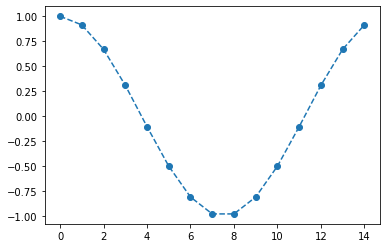
x,y(array([ 1.0000000e+00, 6.1232340e-17, -1.0000000e+00, -1.8369702e-16]),
array([ 0.0000000e+00, 1.0000000e+00, 1.2246468e-16, -1.0000000e+00]))- 스펙트럼의 해석: 만약에 \(x[n]\)이 아래와 같은 꼴이라고 하자.
\[x[n] = \beta_1\cos\left(\frac{2\pi n}{N} \right)\]
Parseval thm에 의하여
\[\sum_{n=0}^{N-1}|x[n]|^2=\frac{1}{N}\sum_{k=0}^{N-1}|X[k]|^2\]
가 성립한다. 좌변과 우변을 각각 정리하면
- \(LHS = \frac{N}{2}\beta_1^2\) (\(\because\) 예비학습에 의하여)
- \(RHS = \frac{2}{N}|X[1]|^2\) (\(\because\) \(X[k]\)는 \(k=1,N-1\)일 때에만 0이 아닌 값을 가지고 \(X[1]=X[N-1]\) 이므로)
이다. 따라서
\[\frac{N}{2}\beta_1^2 = \frac{2}{N}|X[1]|^2\]
이 성립한다. 따라서
- \(\beta_1^2 = \frac{4}{N^2}|X[1]|^2\)
- \(\beta_1 = \frac{2}{N}|X[1]|^2\)
이 성립한다.
N = 15
x = np.array([np.cos(2*np.pi*n/N) for n in range(N)])
X = np.fft.fft(x)
fig, ax = plt.subplots(1,2)
ax[0].plot(x,'o--'); ax[0].set_title('x[n]')
ax[1].plot(abs(X)*2/N,'x'); ax[1].set_title(r'$\frac{2}{N}|X[k]|$')Text(0.5, 1.0, '$\\frac{2}{N}|X[k]|$')_files/figure-html/cell-51-output-2.png)
- 예제2: 만약에 \(x[n]\)이 아래와 같은 꼴이라고 하자.
\[x[n] = \beta_1 \cos\left(1\times \frac{2\pi n}{N} \right) + \beta_2\cos\left(2\times \frac{2\pi n}{N} \right) +\beta_7 \cos\left(7\times \frac{2\pi n}{N} \right)\]
beta1 = 3
beta2 = 0.5
beta7 = -2 N = 15
n = np.arange(15)
x = beta1 * np.cos(1 * 2*np.pi*n/N) +\
beta2 * np.cos(2 * 2*np.pi*n/N) +\
beta7 * np.cos(7 * 2*np.pi*n/N)
X = np.fft.fft(x) N = 15
fig, ax = plt.subplots(1,2)
ax[0].plot(x,'o--'); ax[0].set_title('x[n]')
ax[1].plot(abs(X)*2/N,'x'); ax[1].set_title(r'$\frac{2}{N}|X[k]|$')Text(0.5, 1.0, '$\\frac{2}{N}|X[k]|$')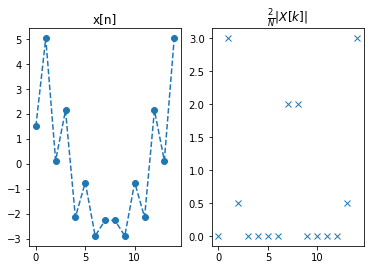
Appendix: 주파수누수
- 지금까지는
\[\exists k\in \mathbb{N}_0~ {\sf s.t.}\quad x[n]= \cos\left(\frac{2\pi kn}{N}\right)\]
이 성립하는 경우를 살펴보았다. 이제 그렇지 않은 경우를 살펴보자.
- \(x[n]\)이 아래와 같은 꼴이라고 하자.
\[x[n] = \cos\left(\frac{2.1\pi n}{N} \right)\]
이는 \(x[n] = \cos\left(\frac{2\pi n}{N} \right)\) 와 거의 비슷하지만 미묘하게 다르다. 퓨리에변환 \(X[k]\)는 아래와 같이 정리된다.
\[X[k] = \sum_{n=0}^{N-1}x[n]\cos\left(\frac{2\pi kn}{N}\right) - i \sum_{n=0}^{N-1}x[n]\sin\left(\frac{2\pi kn}{N}\right)\]
이 경우 \(x[n]=\cos\left(\frac{2\pi n}{N} \right)\)인 경우와는 다르게
\[\not \exists k\in \mathbb{N}_0~ {\sf s.t.}\quad x[n]= \cos\left(\frac{2\pi kn}{N}\right)\]
이다. 따라서
- 허수파트가 0이라든가,
- 실수파트는 \(k=1, N-1\)에서만 값을 가진다든가
와 같은 논의가 성립하지는 않는다. 하지만 대충 성립한다. 그림으로 비교해보면 아래와 같다.
N = 15
x1 = np.array([np.cos(2.0*np.pi*n/N) for n in range(N)])
x2 = np.array([np.cos(2.1*np.pi*n/N) for n in range(N)])
X1 = np.fft.fft(x1)
X2 = np.fft.fft(x2)
fig, ax = plt.subplots(1,3)
###
ax[0].set_title('x[n]')
ax[0].plot(x1,'o--',label=r'$x_1[n]=\cos(2\times\frac{\pi n}{N})$')
ax[0].plot(x2,'o--',label=r'$x_2[n]=\cos(2.1\times\frac{\pi n}{N})$')
ax[0].legend()
###
ax[1].set_title('real(X[k])')
ax[1].plot(np.real(X1),'x',label='real(X1[k])');
ax[1].plot(np.real(X2),'x',label='real(X2[k])');
ax[1].legend()
###
ax[2].set_title('imag(X[k])')
ax[2].plot(np.imag(X1),'x',label='imag(X1[k])')
ax[2].plot(np.imag(X2),'x',label='imag(X2[k])')
ax[2].legend()
fig.set_figwidth(15)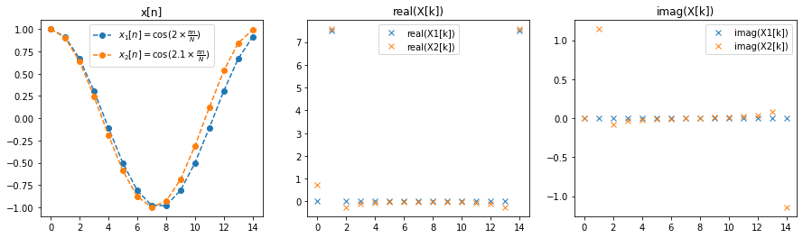
\(x[n] = \cos\left(\frac{2.1\pi n}{N} \right)\)의 경우의 \(X[k]\)의 값은 \(x[n] = \cos\left(\frac{2.0\pi n}{N} \right)\)일 때와는 다르게
- \(k=1,N-1\)이외의 구간에도 약간씩 값이 있으며
- 위상이 뒤틀림에 따라서 허수파트에 대한 값이 생김
그렇지만 거의비슷함.
- 요약: 아래의 상황이 발생해도
\[\not \exists k\in \mathbb{N}_0~ {\sf s.t.}\quad x[n]= \cos\left(\frac{2\pi kn}{N}\right)\]
대충 주파수가 나뉘어져 합리적으로 해석됨